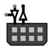

Порт ввода-вывода
Порт ввода-вывода
| Библиотека: | Ввод-вывод |
| Введён в: | 4.0.0 |
| Внешний вид: |
 |
Поведение
Компонент Порт ввода-вывода (Port I/O) моделирует группу контактов ввода-вывода общего назначения (GPIO), которая может быть настроена как на вход, так на выход или для двунаправленной работы. Каждому контакту в блоке соответствует свой квадратный индикатор, цвет которого отображает текущее логическое значение.
В зависимости от значения атрибута Направление порта компонент работает в одном из следующих режимов:
- Вход: Компонент работает как источник сигналов для схемы. Пользователь может изменять состояние каждого контакта кликом Инструмента «Нажатие». Эти состояния выдаются в схему.
- Выход: Компонент принимает сигналы из схемы и отображает их на индикаторах.
- Оба направления (один контакт управления выходами): Двунаправленный режим с общим сигналом разрешения выхода. Имеется дополнительный 1-битный вход разрешения «Выход включён» (OE). Если OE равен 1, компонент работает в режиме входа для схемы и транслирует в неё значения, поступающие от других источников на шине. Если OE равен 0, компонент работает как передатчик и выдает на шину значения, установленные пользователем с помощью Инструмента «Нажатие».
- Оба направления: Двунаправленный режим с побитным управлением направлением. Для каждого контакта предусмотрен собственный бит разрешения выхода в многобитной шине управления.
Контакты (для компонента с ориентацией вправо)
- Левая сторона, верхний контакт (вход, разрядность 1 или равна количеству контактов):
- Сигнал разрешения выхода (OE / Out Enable). Присутствует только в двунаправленных режимах. В режиме с одним контактом управления имеет разрядность 1, в режиме с побитным управлением — разрядность совпадает с количеством контактов.
- Левая сторона, средний контакт (выход, разрядность равна количеству контактов):
- Выходные контакты компонента в схему (выдают значения в схему при направлении «Вход» или при отключенном OE в двунаправленном режиме).
- Левая сторона, нижний контакт (вход, разрядность равна количеству контактов):
- Входные контакты компонента из схемы (принимают значения из схемы при направлении «Выход» или при включенном OE в двунаправленном режиме).
Атрибуты
Когда компонент выбран или добавляется, клавиши со стрелками меняют его атрибут Направление.
- Направление
- Определяет сторону, на которой располагаются контакты компонента.
- Количество контактов
- Количество контактов в порту ввода-вывода (от 1 до 32).
- Направление порта
- Задает режим работы: Вход, Выход, Оба направления (один контакт управления выходами) или Оба направления.
- Метка, Положение метки, Шрифт метки, Цвет метки
- Настройка текстовой метки компонента.
- Метка видна
- Определяет, отображается ли метка.
Поведение Инструмента «Нажатие»
В режимах, поддерживающих ввод («Вход» или двунаправленный режим при отключенном разрешении выхода), клик по индикатору контакта переключает его значение по циклу: 0 → 1 → высокоимпедансное состояние (Z) / неинициализированное значение (U).
Назад к Справке по библиотеке